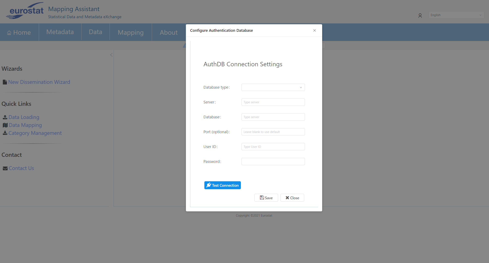
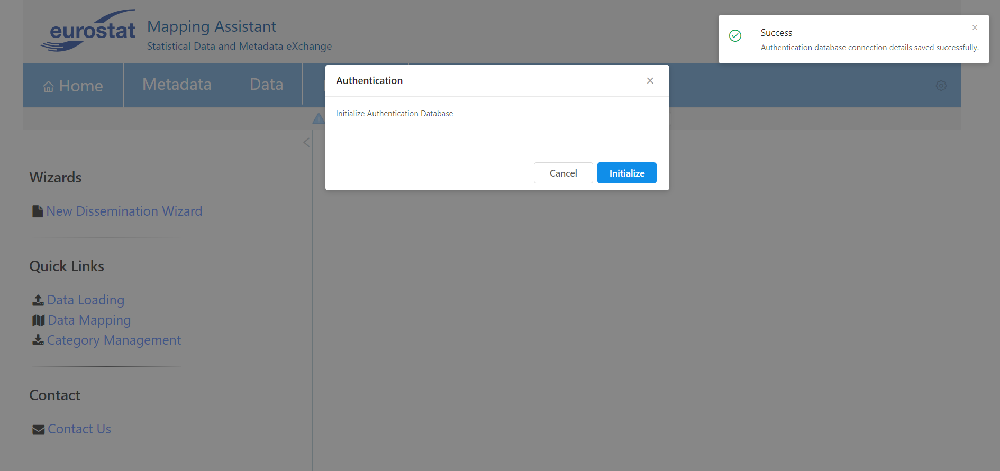
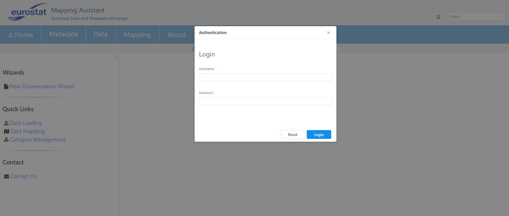

AUTHDB is a database to store and manage users, permissions and roles. It can be any database the user prefers. Only one connection to an authdb can be configured. Below is the screen that opens when Admin accesses MAWEB for the first time after the web app has been deployed.

The AuthDB Connection settings are the following:
| Option | Description |
|---|---|
| database-type | The database type. Options: [Oracle, MySQL, SqlServer]. |
| Server | The Server domain. |
| Database | The Database name. |
| username | The user name for obtaining connections. |
| password | The password for obtaining connections. |
After connection details are successfully saved, the following modal will appear for initializing AuthDB:

If the initialization of AuthDB is successful, then the following login modal will be displayed:

Admin can login with Admin as username. Password is left empty. For security reasons, after successful login, Admin should go and change the default credentials using MANAGE_USERS page.